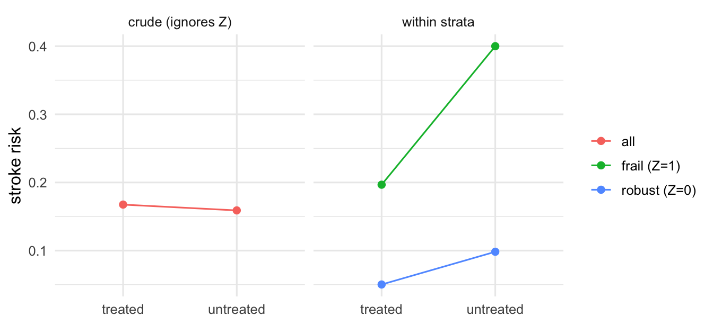
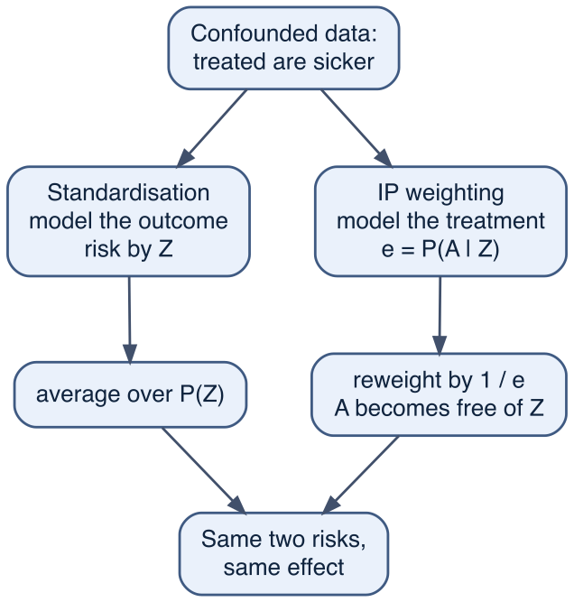

Show code
df <- simulate_cohort(n = 50000, seed = 2024)
truth <- cohort_truth(df) # the oracle: only available because we built the worldWe can write a causal question as a contrast of potential outcomes, \(E[Y(1)] - E[Y(0)]\) (Chapter 10), and we can read off a graph which variables we must adjust for to make that contrast identifiable — the backdoor adjustment set (Chapter 11). What we have not yet done is to take a data set and actually compute a causal effect from it.
This chapter does that without regression. The reason is that regression is a machine, and machines hide their workings. If we go straight to it we are liable to confuse two very different things: the causal logic (which contrast answers our question, and what we must hold fixed to get it) and the statistical apparatus (how a model borrows strength across the data to estimate that contrast). The causal logic is the hard part, and it is fully visible in arithmetic that a school-child could check. So we start there.
Throughout the causal part of this book we work with a single simulated cohort: about 50 000 hypertensive patients, and the question of whether a blood-pressure-lowering drug (Drug A) prevents stroke. Because we built the data ourselves, we know the real causal effect and can verify what various analyses make of it.
df <- simulate_cohort(n = 50000, seed = 2024)
truth <- cohort_truth(df) # the oracle: only available because we built the worldHere is what a hurried analyst does. They compare the stroke risk among the treated with the stroke risk among the untreated, and report the difference.
crude_tab <- df |>
group_by(drug) |>
summarise(risk = mean(stroke), .groups = "drop")
crude_p1 <- crude_tab |> filter(drug == 1) |> pull(risk) # risk among the treated
crude_p0 <- crude_tab |> filter(drug == 0) |> pull(risk) # risk among the untreated
crude_RR <- crude_p1 / crude_p0
crude_tab# A tibble: 2 x 2
drug risk
<int> <dbl>
1 0 0.0348
2 1 0.0582The treated have a stroke risk of 0.058, the untreated 0.035: a risk ratio of 1.67. Taken at face value, the drug raises the risk of stroke by some 67%. A careless reader would conclude that Drug A is dangerous and should be withdrawn.
Now we ask the oracle. The true causal risk ratio — what would happen to stroke risk if we treated everyone versus no one — is 0.6: the drug cuts stroke risk by about 40%. The crude analysis did not merely get the size wrong; it got the sign wrong. It would have us throw away a protective drug as if it were a poison.
The reason is confounding by indication: the sicker patients preferentially get the drug, and have more strokes whether or not they are treated. The drug’s protective effect masked by the fact that it is preferentially given to people already destined for trouble. To get it right we have to compare like with like.
Before we tackle the full cohort, let us strip the problem down to a single, binary confounder. Imagine a patient is either frail (\(Z=1\)) or robust (\(Z=0\)), fifty-fifty. Frail patients are far more likely to be treated (doctors treat the sick): an 80% chance, against 20% for the robust. Also, frailty is dangerous in itself: the untreated risk of stroke is 40% in the frail and 10% in the robust. The drug, in this world, halves the risk of stroke in everyone — frail or robust alike (RR=0.5).
set.seed(1)
mini <- tibble(Z = rbinom(2e5, size = 1, prob = 0.5)) |> # 1 = frail, 0 = robust
mutate(
A = rbinom(n(), 1, prob = if_else(Z == 1, 0.8, 0.2)), # the frail get treated more
baseline_risk = if_else(Z == 1, 0.40, 0.10), # untreated risk by frailty
risk = baseline_risk * if_else(A == 1, 0.5, 1), # the drug halves risk in both strata
Y = rbinom(n(), 1, prob = risk)
)These lines of code read top to bottom like a causal story. The line for A is the confounding: treatment depends on Z. The line for risk contains both the confounding (baseline_risk depends on Z) and the true effect (the 0.5). Z is a common cause of A and Y — a fork, in the language of Chapter 11 — and that is all that makes a confounder a confounder.
What does the crude comparison make of this?
crude <- mini |>
group_by(A) |>
summarise(risk = mean(Y), .groups = "drop")
mini_crude_RR <- (crude |> filter(A == 1) |> pull(risk)) /
(crude |> filter(A == 0) |> pull(risk))
crude# A tibble: 2 x 2
A risk
<int> <dbl>
1 0 0.159
2 1 0.168The treated look slightly worse than the untreated (a risk ratio of about 1.05), even though we built the drug to halve risk in every single patient. This is Simpson’s paradox, which is not really a paradox, once you understand it. The treated group is stuffed with frail patients, so we are comparing mostly-sick people on the drug against mostly-healthy people off it. The cure is to stop comparing across the confounder and start comparing within it. Look at the frail and the robust separately:
strata_tab <- mini |>
mutate(stratum = if_else(Z == 1, "frail (Z=1)", "robust (Z=0)")) |>
group_by(stratum, A) |>
summarise(risk = mean(Y), .groups = "drop") |>
pivot_wider(names_from = A, values_from = risk, names_glue = "risk_A{A}") |>
rename(risk_treated = risk_A1, risk_untreated = risk_A0) |>
mutate(risk_ratio = risk_treated / risk_untreated)
strata_tab |>
kbl(digits = 3, caption = "Within each stratum, the truth reappears.") |>
kable_styling(full_width = FALSE)| stratum | risk_untreated | risk_treated | risk_ratio |
|---|---|---|---|
| frail (Z=1) | 0.400 | 0.197 | 0.492 |
| robust (Z=0) | 0.098 | 0.050 | 0.511 |
Within each stratum the risk ratio is 0.5. Stratification works because within a level of \(Z\), treatment is no longer tangled up with frailty — everyone in the row is equally frail, so the only thing separating the treated column from the untreated column is the treatment. This is conditional exchangeability: given the confounder, the treated are a fair stand-in for what would have happened to the untreated, and vice versa. It is exactly the assumption the backdoor criterion was designed to deliver.
within_strata <- mini |>
group_by(stratum = if_else(Z == 1, "frail (Z=1)", "robust (Z=0)"), A) |>
summarise(risk = mean(Y), .groups = "drop") |>
mutate(panel = "within strata")
overall <- mini |>
group_by(A) |>
summarise(risk = mean(Y), .groups = "drop") |>
mutate(panel = "crude (ignores Z)", stratum = "all")
plot_df <- bind_rows(within_strata, overall) |>
mutate(treatment = if_else(A == 1, "treated", "untreated"))
ggplot(plot_df, aes(treatment, risk, group = stratum, colour = stratum)) +
geom_line() +
geom_point(size = 2) +
facet_wrap(~ panel) +
labs(x = NULL, y = "stroke risk", colour = NULL) +
theme_minimal(base_size = 12)
The left panel slopes the wrong way, while on the right panels both slopes go up. The crude line (left) is a weighted blend of the two stratum lines (on the right), but blended with different mixtures of treated and untreated, which flips its direction.
We now have two stratum-specific answers, but a decision-maker wants one. Should this drug be used in the population? We need a contrast of potential outcomes over the whole population: the stroke risk if everyone were treated, \(E[Y(1)]\), against the risk if no one were, \(E[Y(0)]\).
We already have the pieces. Within each stratum we can see the risk a treated patient runs and the risk an untreated patient runs. To get the risk if everyone were treated, we take each stratum’s treated-risk and average them, weighting by how common each stratum is in the population:
\[ E[Y(a)] \;=\; \sum_{z} \underbrace{P(Y=1 \mid A=a,\, Z=z)}_{\text{risk in the cell}}\; \underbrace{P(Z=z)}_{\text{size of the stratum}} . \]
This is standardisation, and it is the simplest case of what is grandly called the g-formula. Despite the names it is just a weighted average — the within-cell risks, reweighted so that the treated and untreated populations have the same mix of the confounder. In tidyverse terms it is a join (attach the stratum sizes to the cell risks) followed by a weighted sum:
strata_w <- mini |> # P(Z): how common each stratum is
count(Z) |>
mutate(p = n / sum(n))
cell_risk <- mini |> # risk in each (stratum, treatment) cell
group_by(Z, A) |>
summarise(risk = mean(Y), .groups = "drop")
standardised <- cell_risk |>
left_join(strata_w, by = "Z") |> # attach each cell's stratum size
group_by(A) |>
summarise(EY = sum(risk * p), .groups = "drop") # average cell risk over P(Z)
risk_if_all_treated <- standardised |> filter(A == 1) |> pull(EY)
risk_if_none_treated <- standardised |> filter(A == 0) |> pull(EY)
c(EY1 = risk_if_all_treated, EY0 = risk_if_none_treated,
RD = risk_if_all_treated - risk_if_none_treated,
RR = risk_if_all_treated / risk_if_none_treated) EY1 EY0 RD RR
0.1236012 0.2493905 -0.1257893 0.4956131 The standardised risk ratio is back to 0.5, and the standardised risk difference says the drug would prevent about 13 strokes per hundred people. The crude analysis said the drug was slightly harmful, standardisation recovers the truth.
Standardisation / the g-formula. Estimate the outcome risk within each level of the confounders, then average those risks over the confounder distribution of a chosen target population. Do it once setting \(A=1\) for everyone and once setting \(A=0\) for everyone, then contrast the two. This is the backbone of causal estimation; almost everything else in this book is a way of getting better estimates of the within-cell risks.
One subtlety worth flagging now, because it returns in the chapter on interaction (Chapter 16): we chose to standardise to the whole cohort’s mix of frailty. Had we chosen a different target population — say, only the frail — we would get a different number whenever the effect varies across strata. The estimand is not just “the effect”; it is “the effect in this population.” When the within-stratum effects are equal, as here, the choice does not matter.
There is a second route to the same destination, and it is the engine of the time-varying methods in Chapter 14. Instead of fixing up the outcome side (averaging cell risks over a common confounder distribution), we fix up the treatment side: we reweight individuals so that, in the reweighted “pseudo-population”, treatment no longer depends on the confounder.
A frail patient had an 80% chance of treatment, so treated frail patients are over-represented; we down-weight them by dividing by 0.8. Untreated frail patients were rare (a 20% chance), so we up-weight them by dividing by 0.2. Each person is weighted by one over the probability of the treatment they actually received, given their confounder — the inverse probability of treatment.
The scheme below sets the two routes side by side: the same confounded data, one fix applied on the outcome side and one on the treatment side, meeting at the same pair of risks. Standardisation (§12.3) never models treatment; weighting never models the outcome — yet they agree.

Step by step, mapping the code below onto the right-hand (weighting) route:
p_treat is \(P(A=1 \mid Z)\), the probability of being treated given the confounder. Here it is known by construction — 0.8 for the frail, 0.2 for the robust. (In the real cohort of §12.5 it is just the fraction treated within a stratum; with continuous confounders it becomes a fitted model.)1 / p_treat, an untreated person 1 / (1 - p_treat). A frail treated patient was likely (\(p = 0.8\)) and gets a small weight (\(\approx 1.25\)); a frail untreated patient was rare (\(p = 0.2\)) and gets a large weight (\(5\)) — standing in for all the frail who would have gone untreated.weighted.mean(Y, w) within each treatment group gives the pseudo-population risks: the treated group estimates \(E[Y(1)]\), the untreated group \(E[Y(0)]\).ipw <- mini |>
mutate(
p_treat = if_else(Z == 1, 0.8, 0.2), # P(A=1 | Z): the propensity
w = if_else(A == 1, 1 / p_treat, 1 / (1 - p_treat)) # inverse-probability weight
) |>
group_by(A) |>
summarise(EY = weighted.mean(Y, w), .groups = "drop")
ipw_EY1 <- ipw |> filter(A == 1) |> pull(EY)
ipw_EY0 <- ipw |> filter(A == 0) |> pull(EY)
ipw# A tibble: 2 x 2
A EY
<int> <dbl>
1 0 0.250
2 1 0.124The same two risks, 0.124 and 0.25, and so the same effect. Standardisation and weighting are two sides of one coin: one models the outcome, the other models the treatment, and both target the same g-formula (with the “g” meaning “general”, by the way). Notice that we did not have to fit any regression models to get the propensity — within a stratum it is simply the observed fraction treated.
The toy world had one binary confounder, and stratification was exact and effortless. The real cohort is not like that. Its confounders — severity, age — are continuous, and diabetes is binary, and there are several of them at once. We cannot form a stratum for every value of a continuous variable, because almost every value is unique. We have to coarsen: chop severity and age into bins and cross-classify. The function below is exactly the join-and-weighted-sum of the mini-simulation, wrapped so we can vary the number of severity bins.
standardise_binned <- function(df, sev_bins) {
df |>
mutate(
sev = cut(severity, quantile(severity, seq(0, 1, length = sev_bins + 1)), include.lowest = TRUE),
age_grp = cut(age, quantile(age, seq(0, 1, length = 5)), include.lowest = TRUE),
stratum = interaction(sev, age_grp, diabetes, drop = TRUE)
) |>
group_by(stratum) |>
summarise(
weight = n(),
risk_treated = mean(stroke[drug == 1]), # NaN if a cell has no treated ...
risk_untreated = mean(stroke[drug == 0]), # ... or no untreated
.groups = "drop"
) |>
mutate(weight = weight / sum(weight)) |> # P(stratum)
summarise(
sev_bins = sev_bins,
n_strata = n(),
empty_cells = sum(is.na(risk_treated) | is.na(risk_untreated)),
EY1 = sum(weight * risk_treated, na.rm = TRUE),
EY0 = sum(weight * risk_untreated, na.rm = TRUE)
) |>
mutate(RD = EY1 - EY0, RR = EY1 / EY0)
}
res <- c(3, 5, 10, 20) |>
map(\(b) standardise_binned(df, b)) |>
list_rbind()summary_tab <- bind_rows(
tibble(method = "crude (no adjustment)", n_strata = 1L, empty_cells = 0L,
RD = crude_p1 - crude_p0, RR = crude_RR),
res |> transmute(method = paste0("standardised, severity in ", sev_bins, " bins"),
n_strata, empty_cells, RD, RR),
tibble(method = "TRUTH (oracle)", n_strata = NA_integer_, empty_cells = NA_integer_,
RD = truth$ATE_RD, RR = truth$ATE_RR)
)
summary_tab |>
kbl(digits = 3, caption = "Crude, standardised at increasing resolution, and the truth.") |>
kable_styling(full_width = FALSE)| method | n_strata | empty_cells | RD | RR |
|---|---|---|---|---|
| crude (no adjustment) | 1 | 0 | 0.023 | 1.672 |
| standardised, severity in 3 bins | 24 | 0 | -0.015 | 0.738 |
| standardised, severity in 5 bins | 40 | 0 | -0.019 | 0.687 |
| standardised, severity in 10 bins | 80 | 0 | -0.021 | 0.662 |
| standardised, severity in 20 bins | 160 | 2 | -0.024 | 0.631 |
| TRUTH (oracle) | NA | NA | -0.027 | 0.600 |
Read this table from top to bottom and the story of the chapter is in it. The crude estimate has the wrong sign (RR above 1). The moment we standardise — even with a crude three-bin split of severity — the sign flips to protective. As we refine the bins the estimate marches towards the truth: from RR 0.74 at 3 bins down towards 0.63 at 20 bins, against a true 0.6.
But notice two things. First, it has not arrived: even at 20 bins the standardised risk ratio still understates the protective effect. Severity is a strong, continuous confounder, and within any bin the treated patients still sit at the higher-severity end — a residue of confounding that coarse bins cannot remove. Second, look at the empty_cells column: as we add bins, cells begin to appear that contain treated patients but no untreated ones, or vice versa. Those cells contribute nothing, and there is no arithmetic that can rescue them. This is the curse of dimensionality meeting the positivity assumption: with several confounders finely cut, the data spreads too thin to compare like with like everywhere.
We can confirm that inverse-probability weighting, using the same coarsened strata to estimate the propensity, lands in the same neighbourhood:
ipw_cohort <- df |>
mutate(
sev = cut(severity, quantile(severity, seq(0, 1, length = 11)), include.lowest = TRUE),
age_grp = cut(age, quantile(age, seq(0, 1, length = 5)), include.lowest = TRUE),
stratum = interaction(sev, age_grp, diabetes, drop = TRUE)
) |>
group_by(stratum) |>
mutate(e = mean(drug)) |> # stratum propensity = fraction treated
ungroup() |>
mutate(w = if_else(drug == 1, 1 / e, 1 / (1 - e))) |> # inverse-probability weight
group_by(drug) |>
summarise(EY = weighted.mean(stroke, w), .groups = "drop")
ipw_RR <- (ipw_cohort |> filter(drug == 1) |> pull(EY)) /
(ipw_cohort |> filter(drug == 0) |> pull(EY))The weighted risk ratio is 0.662 — the same partial correction, and the same residual gap.
We have hit the wall that the rest of the book is built to climb. Nonparametric stratification assumes almost nothing about the shape of the relationship between the confounders and the outcome. But that simplicity is expensive. To remove the confounding of a strong continuous variable it needs very fine bins, and fine bins need enormous samples. At realistic sample sizes it recovers the direction of the effect and a rough magnitude, but not the precise causal estimate.
Regression restores the precision by introducing assumptions. Instead of estimating a separate risk in every cell, it assumes the risk changes smoothly with severity and age — and then it can borrow strength across neighbouring cells, fill in the empty ones by extrapolation, and use the whole sample to pin down a few coefficients rather than hundreds of independent cell means. To see the gain, fit one model for the outcome and standardise exactly as before, but using the model’s fitted risks in place of the raw cell means:
m <- glm(stroke ~ drug + severity + age + diabetes, family = poisson, data = df)
predict_risk <- function(set_drug) { # the risk if EVERYONE had drug = set_drug
df |>
mutate(drug = set_drug) |>
predict(m, newdata = _, type = "response") |>
mean()
}
reg_RR <- predict_risk(1) / predict_risk(0)
reg_RR[1] 0.6127451The regression-standardised risk ratio is 0.613 — closer to the truth of 0.6 than any of our binned estimates, because the model used severity as the continuous variable it is rather than chopping it into slabs. And the procedure is identical in spirit to what we did by hand: estimate the risk under treatment and under no treatment for everyone, then average and contrast. The model only changed how the within-cell risks are estimated.
Regression does not introduce a new kind of causal reasoning. It is standardisation with a model in the middle. Everything in Part V — linear models, GLMs, multilevel models, and the Bayesian g-computation of Chapter 28 — is this chapter, with the cell means replaced by a model’s predictions, and (when we go Bayesian) with honest uncertainty attached to the answer.
What regression does not do is rescue a bad causal design. If we adjust for the wrong variables — leave a backdoor open, or condition on a collider or a mediator — the model will give us a confident, precise, and wrong answer. The causal logic of which variables to put in came from the DAG, not from the regression, and no amount of statistical sophistication substitutes for it. We will examine this trap in Chapter 14, where the tempting move of adjusting for a time-varying variable backfires because that variable is also a mediator.
Every causal effect estimated in this chapter rests on three causal assumptions, none of which the data can verify for us:
severity, age and diabetes are the only common causes of treatment and outcome. In a real study it is an act of faith, defensible only by argument, and probed by the sensitivity analysis of Chapter 17.Stratification and standardisation are valuable precisely because they drag these assumptions out to the open. There is nowhere for an unmeasured confounder to hide in a 2×2 table. Regression’s power is also its danger — it can produce a beautiful estimate from a hopeless design, and the assumptions are no less necessary for being harder to see.
Make the confounding worse. In the binary-confounder mini-simulation, raise the treatment probability among the frail from 0.8 to 0.95 and lower it among the robust from 0.2 to 0.05. Recompute the crude and the standardised effects. Does the crude estimate get more misleading? Does standardisation still recover the truth? Explain why.
A genuinely null drug. Change the mini-simulation so the drug has no effect (risk ratio 1 in both strata). What does the crude comparison now suggest, and what does standardisation conclude? What does this tell you about reading a crude association as evidence of harm or benefit?
Find the breaking point. In the master cohort, push standardise_binned() to 40, 60 and 80 severity bins. Plot the standardised risk ratio and the number of empty cells against the number of bins. At what resolution does adding bins stop helping? Relate your answer to positivity.
Standardise to a different population. Modify the standardisation so that it targets only the diabetic patients (standardise over the confounder distribution within diabetes == 1). Compare the result to the whole-cohort estimate. Why do they differ, and which chapter does this foreshadow?
Conceptual. A colleague says: “I adjusted for everything I measured, so my estimate must be less confounded than yours.” Give two distinct reasons, using the language of this chapter and Chapter 11, why adjusting for more variables can make a causal estimate worse. ```